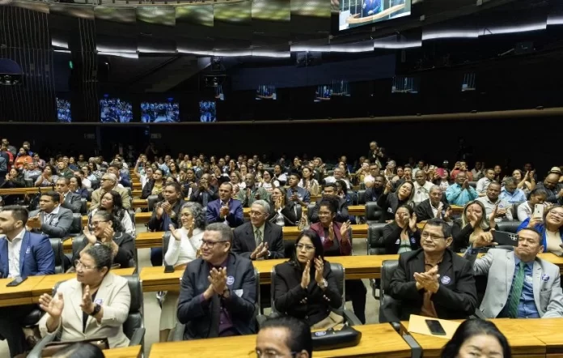

Na Câmara dos Deputados, pescadores, deputado federais e representantes de entidades de pesca de todo o Brasil pediram a derrubada do artigo 71 da MP 1303/25, que altera as regras para homologação do Seguro-Defeso. Temendo a fragilização de entidades, o deputado federal Raimundo Costa (Pode/BA) apresentou emenda supressiva à medida.
Uma homenagem ao dia do pescador se tornou um grito de socorro ao Congresso Nacional.
A Medida Provisória apelidada como “MP do Trava-Defeso” pelo autor da emenda supressiva no Congresso, Raimundo Costa, tem provocado forte reação nos pescadores.
De acordo com a Federação dos Pescadores e Aquicultores do Estado da Bahia (Fepesba), as novas exigências impostas podem impedir que inúmeros pescadores recebam o benefício, além de fragilizar diretamente as entidades que atuam na defesa da categoria.
“Neste momento, travamos mais uma batalha importante: a derrubada do artigo 71, um ameaça aos direitos duramente conquistados pelos pescadores artesanais”, disse Raimundo. “Dediquei uma vida, ouvi e luto todos os dias há mais de 38 anos pelo direito de quem tira da água o sustento da sua família. Não aceitaremos retrocessos. Estaremos atentos, mobilizados e unidos”, declarou o parlamentar.
Presente na Sessão Solene, o ministro da Pesca e Aquicultura, André de Paula, comentou sobre “questões importantes para o pescador”. “Todo dia, para o pescador e para a pescadora, é dia de guerra, de batalha, de luta. Uma homenagem se transforma em um grande grito, num momento em que se marca uma posição em relação a questões que são muito importantes para o pescador”. O ministro ainda relembrou números do Governo em relação a pesca. “No ano passado, 1,1 milhão de pescadores receberam o seguro-defeso, totalizando R$ 5,2 bilhões pagos”.
Entenda
A proposta altera as regras para homologação do Seguro-Defeso, benefício de milhares trabalhadores durante o período de reprodução de pescados.
O ponto mais crítico está no artigo 71 da medida, que, segundo as lideranças do setor, representa um risco real de desestruturação das organizações de pesca e da própria manutenção da atividade artesanal.
As novas exigências impostas podem impedir que inúmeros pescadores recebam o benefício, além de fragilizar diretamente as entidades que atuam na defesa da categoria.
Fonte: Informe Baiano